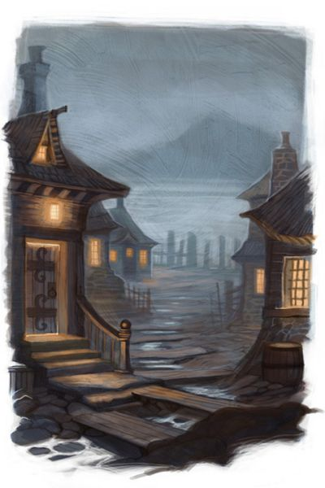

Univers
Terre brûlée au vent des landes de pierre
Aux pieds des cimes, c'est pour les vivants
Un peu d'enfer, aux bords des Deux lacs.
Des nuages noirs qui viennent du nord
Colorent la terre, les rives, les rivières
C'est le décor aux bords des Deux lacs.
On y vit aussi au temps de ces dieux
Et du saghiann, au rythme des pluies
Et du soleil, au pas des chevaux.
On y croit encore aux monstres des lacs
Qu'on voit nager certains soirs d'été
Et replonger pour l'éternité.
On y voit encore des hommes d'ailleurs
Venus chercher le repos de l'âme
Et pour le cœur, un goût de meilleur.
L'on y croit encore que le jour viendra,
Il est tout près, où Egonzasthannais
Feront la paix dans leurs comtés.
Là-bas, aux bords des Deux lacs
On sait tout le prix du silence
Là-bas, aux bords des Deux lacs
On dit que la vie, c'est une folie
Et que la folie, ça se danse.
- Les lacs de Laelith,
chanson du barde Aime Sarh-dou
Cette section a pour but de présenter un univers pour D&D 5 à la fois complet et cohérent, dans lequel se déroulent notamment tous les scénarios D&D 5 proposés par AideDD. Pour cela, le site se base sur la ville de Laelith et le monde des Royaumes Oubliés, en l'an 1489 CV du calendrier de Faerûn.
Laelith est apparue en 1986 dans le numéro 35 du magazine Casus Belli, puis a été développée dans les numéros qui ont suivi. Elle est l'oeuvre de plusieurs personnes donc Didier Guiserix, Pierre Rosenthal et Patrick Durand-Peyrolles entre autres. En 1991 sort un hors-série de 106 pages qui compile nombre d'articles précédemment parus mais propose également beaucoup de matériels inédits. À noter que Laelith est conçue pour pouvoir s'insérer dans n'importe quel univers (seules la cité de Laelith et les provinces qui l'entourent sont présentées) et n'est basée sur aucun système de jeu particulier. Ce n'est donc pas une ville faite sur-mesure pour Dungeons & Dragons, même si l'immense majorité des scénarios sortis à l'époque (respect monsieur Denis Beck) étaient pour AD&D.
Les Royaumes Oubliés (Forgotten Realms en anglais) sont un monde imaginaire originellement conçu par Ed Greenwood pour les règles d'AD&D, introduit sous forme d'articles à partir de 1979 dans le magazine Dragon, puis publié sous le nom de Forgotten Realms Campaign Setting en 1987. Le tout va rapidement s'imposer comme l'univers emblématique de Dungeons & Dragons toutes éditions confondues. Un des personnages principaux imaginés par Greenwood pour ce monde est le célèbre magicien Elminster, et c'est également dans ce cadre de campagne que l'auteur R.A. Salvatore situe les aventures de son célèbre héros Drizzt Do'Urden.

Le monde proposé sur AideDD repose donc sur ces deux settings, en situant Laelith à la place du Lac vapeur des Royaumes Oubliés, et en modifiant certains concepts. L'ambiance y est volontairement moins « baroque » que dans le hors-série de Laelith et moins « magique » que dans les Royaumes Oubliés originaux. Exit le Lithoracle ; la magie existe mais n'est pas omniprésente car c'est un art que peu de personnes maîtrisent ; les objets magiques sont rares, ce qui fait que quand on en possède un on préfère le garder que de le mettre en vente. C'est un parti pris assumé qui, de plus, colle plutôt bien à cette nouvelle édition de D&D. Le concept politique du Royaume des Deux Lacs est de fait une création.
Ceci dit, vous trouverez dans cette section Univers :
- Une présentation générale des divers plans d'existence de D&D (Féerie, Gisombre, plan éthéré, plan astral, Chaos élémentaire, etc) et une présentation plus détaillée des Neuf enfers (le plan des diables), des Abysses (le plan des démons) et des yugoloths.
- Des informations détaillées sur les principaux dieux du panthéon des Royaumes Oubliés après la Fracture : Azouth, Baine, Chauntéa, Cyric, Kélemvor, Lathandre, Mystra, Oghma, Séluné, Shar, Sunie, Sylvanus, Talos, Tempus, Torm, Tyr, Umberlie, mais aussi Bahamut, Corellon Larethian, Garl Brilledor, Gruumsh, Lolth, Maglubiyet, Moradin, Tiamat ou bien encore Yondalla.
- Un résumé de l'histoire des Royaumes Oubliés et des derniers événements majeurs qui les ont bouleversés (Temps des Troubles, Magepeste, Fracture) ainsi que de la Guerre de sang.
- Une présentation de la géographie des diverses régions qui composent les Royaumes Oubliés :
- Le Nord et la Côte des Épées, avec les villes de Phlan, Mulmastre et Montéloy
- Chult et la ville de Port Nyanzaru
- Les terres de la Horde (ambiance mongole)
- Kara-Tur (ambiance orientale)
- Une présentation des provinces et des principales villes des Deux Lacs, les terres autour de Laelith : le matriarcat d'Olizya, la baronnie gnome de Kaoca, la marche d'Azilian, le grand duché d'Agramor, les comtés d'Egonzasthan, les jardins de Jadhys et le fief de Muïck (géographie, populations, distances, climat, lieux particuliers, carte interactive, etc).
LAELITH V2
En novembre 2016, Black Book Éditions lance une précomande participative pour un reboot de Laelith. La même ville, mais avec un saut dans le temps de 30 ans et tout ce que cela implique : nouveau Roi-Dieu, changements architecturaux, nouveaux personnages importants, etc.
Toutes les pages concernant Laelith sur AideDD se basent toutefois sur le premier hors-série, celui de 1991, et non pas sur cette nouvelle version qui est finalement sortie en 2021.
- Une présentation détaillée de la cité sainte de Laelith et de ses terrasses : la Chaussée du lac, la Main qui travaille, la Prospérité, le Nuage, le Châtiment et la Haute Terrasse, sans oublier le cloaque (histoire, organisation, personnages importants, lieux particuliers, carte interactive, et même des aventures solo à jouer en ligne sur le site).
- Divers organisations des Royaumes Oubliés avec leurs rangs : l'Alliance des seigneurs, l'Enclave d'émeraude, les Ménestrels, l'ordre du Gantelet, le Zhentarim et le culte du Dragon.
- Des aides de jeu sur la culture des drakéides, des drows, des elfes, des gnomes, des halfelins et des nains, mais aussi sur l'écologie (physiologie, habitat, société, relations, religion) de créatures comme les dragons, les gnolls, les gobelins, les hobgobelins, les kenku, les kobolds, les orcs et les tabaxis.
- Enfin, deux jeux en ligne sur le thème de Laelith sont présentés : la Balle Sanglante et la Guerre des Guildes.